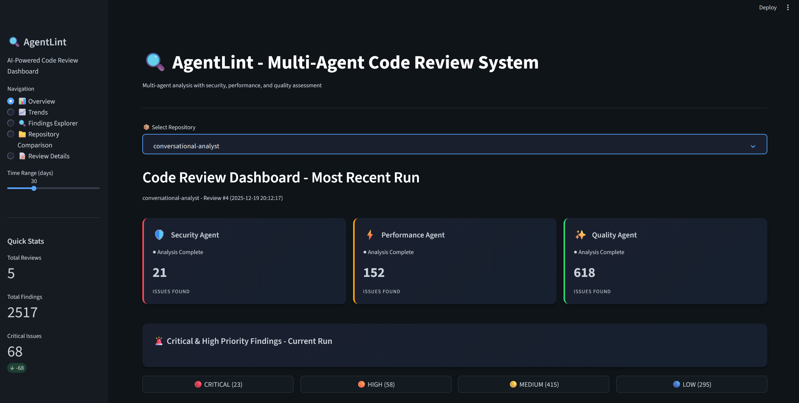

Catching Hidden Risks in AI-Generated Code
Alpha · Personal Project
AI-generated code often appears correct while hiding security risks, performance traps, and reliability failures that surface only after deployment. These issues are easy to miss in prompt-only or single-pass reviews.
- Multi-perspective review across security, performance, and quality
- Findings grouped by severity and failure category
- Dashboard-first workflow for prioritization, not just detection
View system details
Signals & Instrumentation
- Review findings categorized by agent type
- Severity levels tracked per run
- Actionable recommendations with code references
Evidence & Limits
- Workloads: Personal and synthetic code samples designed to reflect common AI-generated patterns:
- Metrics: Issue counts by category and severity; review consistency across runs
- Known gaps: No live production traffic; limited adversarial testing
- Next validation step: Shadow evaluation alongside real development workflows
Additional Metadata
Multi-agent system